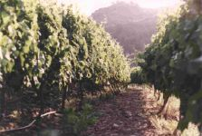
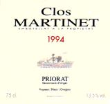

|
Mas Martinet Viticultores
Família Pérez i Ovejero
Ctra De
Falset a Gratallops, km 6
E-43730, Falset (Tarragona)
Tel. +34.(9)77.83-0577
Fax. +34.(9)77.83-0577
URL:
E-Mail:
|

|
Denominación de Origen
(D.O.): Priorat
Descripción de las Bodegas:
Esta denominación de origen lleva el nombre del antiguo
dominio del Priorat de la Cartuja de Scala Dei, que fecha de
principios del siglo XIII. Reúne la conca del río
Siurana y se compone de un conjunto de turones rodeados y protegidos
por montañas, que genera un microclima mediterráneo muy
especial. Un conjunto de factores naturales - como la baja
pluviosidad, la "llicorella" (tierra de pizarra metamorfoseada, muy
abierta, que permite la ventilación radicular) y otros
factores climáticos - hacen del Priorat una pequeña
zona única por sus características, que se reflejan
directamente en sus vinos.
Las variedades negras tradicionales de la D.O. son la Garnatxa y
la Cariñena que, cultivadas en laderas con mucha pendiente,
tienen un rendimiento muy bajo y, por lo tanto, un alto contenido en
azúcar y materias colorantes. Respetando estas variedades, se
introdujeron a Mas Martinet, otras de mejoradas como el Cabernet
Sauvignon, el Merlot, el Pinot Noir y el Syrah.
La plantación es de unas 7 hectáreas, trabajadas en
terrazas. Toda la vid es regada por microaspersión a fin de
aportar el agua necesaria al buen funcionamiento del metabolismo de
la cepa. Esta aportación tiene dos objetivos: el nivel
radicular y el nivel superficial del suelo. Este último es
especialmente necesario cuando hay una insolación
máxima de la cepa, para que disminuya su temperatura, aumente
la humedad relativa atmosférica y evitar el bloqueo de la
planta.
La vinificación sigue el método tradicional y
está siempre dirigida a producir un vino para envejecer. Todos
los procesos se llevan a cabo con sumo cuidado y de forma natural
para someter el vino a la mínimas manipulaciones. Se envejece
en barricas de roble seleccionado y periódicamente se controla
su evolución.
Mas Martinet
Viticultores recomienda:
|

|

|
|
Clos Martinet 1994
|
Martinet Bru 1994
|
|
Vino Tinto. Crianza larga. Vino muy estructurado, gran
potencia en nariz y boca. Muchos taninos finos. Elegante.
Para tomar ahora o guardar 20 años.
|
Vino Tinto. Crianza corta / media. Buena estructura y
potencia en boca. Muy bebible desde ahora. Mejorará
en los próximos 8-10 años.
|
Todas los datos tanto textuales como gráficos
han sido facilitados por las cavas mismas, salvo indicación.